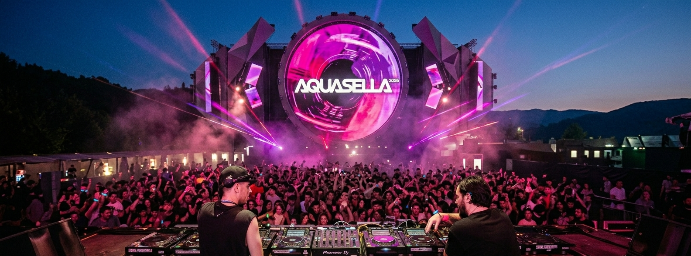

Aquasella 2026

Sobre el Festival
Aquasellano es solo un festival de música electrónica; es un ritual, una experiencia sensorial y el punto de encuentro anual más importante para la cultura clubbing en el norte de España. Ubicado en un entorno natural incomparable en las inmediaciones de Arriondas, este evento ha logrado, a lo largo de casi tres décadas, elevar la música Techno a la categoría de arte, convirtiendo el valle asturiano en el epicentro mundial de la electrónica cada mes de agosto.
Lo que comenzó en 1997 como una apuesta arriesgada se ha consolidado como "El Valle del Techno", un lugar donde la energía de los asistentes y la potencia de los sistemas de sonido crean una atmósfera eléctrica única bajo el cielo de Asturias.
La experiencia Aquasella va mucho más allá de la música. Se trata de la convivencia en su zona de acampada, el respeto por el entorno natural de la ribera del Sella y esa conexión especial que se genera entre el público de todo el mundo. Es el lugar donde la libertad y el ritmo se fusionan para crear recuerdos que duran toda la vida.
En 2026, Aquasella regresa con más fuerza que nunca, reafirmando su leyenda y demostrando por qué sigue siendo el destino soñado para cualquier amante de los ritmos sintéticos y la cultura de baile.